|
|
Support for RTL orientation |
Full support for right-to-left (RTL)
orientation for both core Swing components and Substance-specific
UI controls. Shown below are screenshots for RTL combobox, progress
bar, tabbed pane, internal frame title pane and menu search panel
(last two on the same screenshot in SUNSET theme).
|
|
|
Better support for dark themes |
Better support for dark themes has been provided.
The first screenshot below is from the previous version 2.2, the second
screenshot below is from the new version 2.3 (both screenshots use EBONY theme).
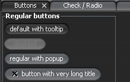
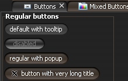
|
|
|
Inverted themes |
Added support for inverted themes. In order to enable inverted
themes, use one of
- UIManager.put(SubstanceLookAndFeel.ENABLE_INVERTED_THEMES,
Boolean.TRUE)
- -Dsubstancelaf.enableInvertedThemes VM flag
When inverted themes are enabled, the SubstanceLookAndFeel.getAllThemes()
function returns inverted themes for all bright and cold themes. The matching theme kind is
ThemeKind.INVERTED. All the colors of the original
theme are inverted, effectively making the non-active colors dark. A screenshot of
inverted AQUA theme with EXCEED watermark from watermark
pack:
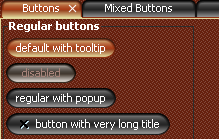
A screenshot of inverted LIME GREEN theme with CROSSHATCH watermark:
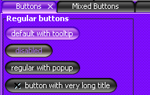
|
|
|
Mixed themes |
A mixed theme uses two base themes (main and secondary) in order
to create blended graphics. The matching theme kind is ThemeKind.MIXED.
The class org.jvnet.substance.theme.SubstanceMixBiTheme provides
a constructor that takes two SubstanceTheme instances.
In order to enable a mixed theme globally in your application, use the following:
- SubstanceLookAndFeel.addMixedTheme(SubstanceMixBiTheme) - enables a single mixed
theme.
- SubstanceLookAndFeel.addMixedTheme(SubstanceTheme, SubstanceTheme) - enables
a single mixed theme.
- SubstanceLookAndFeel.addMixedThemeBy(SubstanceTheme) - enables a collection
of mixed themes where the main theme is the specified parameter and the secondary theme
is a theme of the same theme kind.
Once a theme is enabled globally, the SubstanceLookAndFeel.getAllThemes()
function returns this theme. In addition, you can set a mixed theme locally on some button using
the SubstanceLookAndFeel.BUTTON_THEME_PROPERTY property. Here are few
examples of mixed themes:
Six "pill" buttons using local mixed themes. The themes are : AQUA + LIGHT AQUA, AQUA + BOTTLE
GREEN, BARBY PINK + RASPBERRY, BOTTLE GREEN + LIME GREEN, BROWN + SUN GLARE,
SUNSET + ORANGE:

BROWN + SUN GLARE global theme set. The controls (tabbed pabe, scroll bars) are using
the global theme:
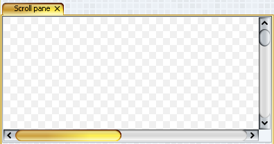
SKY HIGH + TURQUOISE LAKE (both from theme
pack) theme selected from NetBeans module.
In addition, CLASSIC button shaper and SPECULAR gradient painter are used:
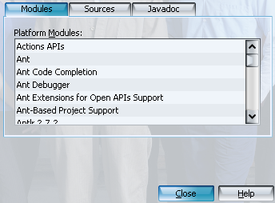
|
|
|
Tinted, toned and shaded themes |
All Substance themes can be tinted (shifted towards white),
toned (shifted towards gray) and shaded (shifted towards black).
- In order to tone a theme, use
org.jvnet.substance.theme.SubstanceTintTheme.
- In order to tint a theme, use
org.jvnet.substance.theme.SubstanceToneTheme.
- In order to shade a theme, use
org.jvnet.substance.theme.SubstanceShadeTheme.
The following screenshots illustrate the original (AQUA) theme, 40% toned, 40% tinted
and 40% shaded versions of the original (AQUA) theme:
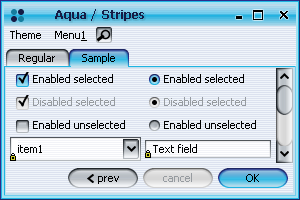
 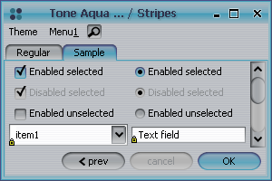
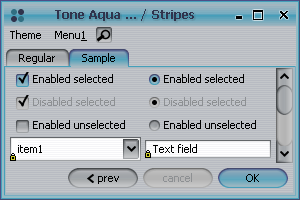
|
|
|
Icons for watermark menu items in the system menu |
Menu items for changing the current watermark
in the system menu have preview icons:
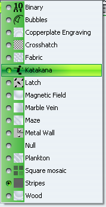
|
|
|
Image watermark kind |
The SubstanceConstants.ImageWatermarkKind
enum defines the following kinds of image watermark:
- SCREEN_CENTER_SCALE - the default behaviour. The image is centered
in the screen and scaled down if necessary.
- SCREEN_TILE - the image is tiled starting from the screen top-left corner
and not scaled.
- APP_ANCHOR - the image is anchored to the top-left corner of the
application frame and not scaled.
- APP_CENTER - the image is anchored to the center of the
application frame and not scaled.
- APP_TILE - the image is tiled starting from the top-left corner of the
application frame and not scaled.
In order to set the image watermark kind use
- SubstanceLookAndFeel.setImageWatermarkKind(ImageWatermarkKind)
- -Dsubstancelaf.watermark.image.kind VM property. The value
should match the name of one of the SubstanceConstants.ImageWatermarkKind
enum values.
An example of APP_TILE image watermark kind:
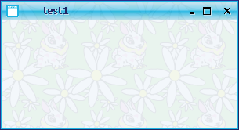
|
|
|
Image watermark opacity |
Added option to specify the opacity of the image watermark.
The default value is 0.2 and can be changed by
- SubstanceLookAndFeel.setImageWatermarkOpacity(float).
The value should be a float in 0.0-1.0 range.
- -Dsubstancelaf.watermark.image.opacity VM property. The value
should be a float in 0.0-1.0 range.
An example of default opacity (0.2) and custom opacity (0.6):
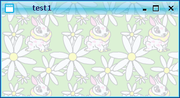
|
|
|
Regular watermarks are theme-based |
Non-image watermarks use theme-based colors.
An example of KATAKANA watermark under FAUVE MAUVE and SPRING LEAF
themes (from theme pack):
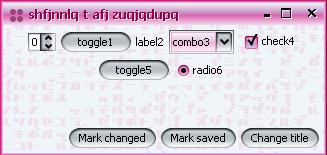
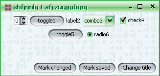
|
|
|
Noise-based watermarks |
Seven new noise-based watermarks (shown under EBONY theme):
Copperplate Engraving

Fabric

Magnetic Field

Marble Vein

Maze

Plankton

Wood

|
|
|
Additional focus ring kinds |
Added two new focus kinds in
SubstanceConstants.FocusKind enum -
UNDERLINE and STRONG_UNDERLINE. The
screenshot is under CROSSHATCH watermark:
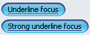
|
|
|
Configuring toolbar flatness |
New client property SubstanceLookAndFeel.TOOLBAR_BUTTON_FLAT
defines the appearance of non-rollover non-selected buttons in toolbars. The default appearance
is flat (no background, no border) and can be changed by setting the above property to
Boolean.FALSE on the button itself, on the toolbar or globally
on UIManager. The top toolbar in the screenshot has default behaviour (all buttons are flat),
the bottom toolbar is marked with the above property and all its buttons are not flat (under LATCH
watermark):
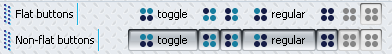
|
|
|
Tab overview dialog |
The org.jvnet.substance.tabbed.TabPreviewPainter
class provides an option to have a tab overview button. The
org.jvnet.substance.tabbed.DefaultTabPreviewPainter provides a default
implementation of this abstract class. In order to set the tab preview painter, use client property
SubstanceLookAndFeel.TABBED_PANE_PREVIEW_PAINTER on either tabbed pane
or globally on UIManager. Value should be an instance of the above class. Once this property is
set, the tabbed pane will show an overview button (situated according to the tab placement). Shown below
is the tab with tab overview button on TOP and BOTTOM placement:
 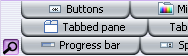
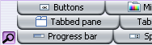
When the tab overview button is clicked, the tab overview dialog is shown and
a separate thread starts populating this dialog with preview thumbnails of all
the tab components:

Clicking on a tab thumbnail closes the tab overview dialog and selects the
matching tab component. Basic rollover effects and tooltip messages are provided
on the tab overview widgets.
|
|
|
Tab preview window |
The org.jvnet.substance.tabbed.TabPreviewPainter
class provides an option to have a tab preview window that will be shown when the mouse
hovers over a tab. The
org.jvnet.substance.tabbed.DefaultTabPreviewPainter provides a default
implementation of this abstract class. In order to set the tab preview painter, use client property
SubstanceLookAndFeel.TABBED_PANE_PREVIEW_PAINTER on either tabbed pane
or globally on UIManager. Value should be an instance of the above class. Once this property is
set, the tabbed pane will show preview window of the tab under mouse (aligned according to the tab placement):

|
|
|
One-click multiple tab close |
The org.jvnet.substance.tabbed.TabCloseCallback
interface provides an option to install a one-click tab close functionality on JTabbedPanes. An instance of
this interface can be set on either the tab component, the tabbed pane or globally on UIManager using
the SubstanceLookAndFeel.TABBED_PANE_CLOSE_CALLBACK client property. The
implementation should return tooltips for relevant actions and the
SubstanceConstants.TabCloseKind value for mouse click on tab area and on
close button area. The values of this enum are:
- NONE - take no action
- THIS - close tab under click
- ALL - close all tabs
- ALL_BUT_THIS - close all tabs but tab under click
If a VetoableMultipleTabCloseListener is registered on
the tabbed pane / globally, it may veto the above result. It is application's responsibility
to provide consistent implementation of these two interfaces. A sample screenshot of
NetBeans-like implementation of one-click tab closing:

|
|
|
Text alignment on tabs |
SubstanceConstants.TabTextAlignmentKind
enum specifies available text alignment kinds for tabbed panes with LEFT
and RIGHT placement. The following kinds are available:
- DEFAULT - default alignment (centered).
- ALWAYS_LEFT - text is always aligned to left.
- ALWAYS_RIGHT - text is always aligned to right.
- FOLLOW_PLACEMENT - on LEFT
placement text is aligned to left, on RIGHT placement text is
aligned to right.
- FOLLOW_ORIENTATION - recommended alignment. For
LTR orientation text is aligned to left, for RTL orientation text is aligned to right.
In order to set the text alignment, use client property
SubstanceLookAndFeel.TABBED_PANE_TEXT_ALIGNMENT_KIND on either tabbed pane
or globally on UIManager. Value should be an element of the above enum. Screenshots of DEFAULT,
ALWAYS_LEFT and ALWAYS_RIGHT alignment:


Screenshot of FOLLOW_ORIENTATION in RTL-oriented application with
RIGHT placement:

|
|
|
Color picker in color chooser |
Integrated Quaqua 3.6.2
color chooser with color picker functionality:
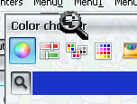
|
|
|
Constant themes for option pane icons |
The SubstanceLookAndFeel.setToUseThemesOnDialogs(boolean)
allows specifying that the option pane icons should use constant themes. The themes are:
- BOTTLE GREEN for JOptionPane.INFORMATION_MESSAGE
- LIGHT AQUA for JOptionPane.QUESTION_MESSAGE
- SUNSET for JOptionPane.WARNING_MESSAGE
- SUNFIRE RED (not public) for JOptionPane.ERROR_MESSAGE
Screenshots of different option panes under SQUARE MOSAIC watermark and GOOSEBERRY JUNGLE
theme from theme pack (note that the icon theme does not
match the dialog theme):
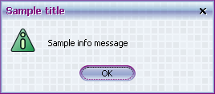
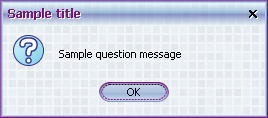
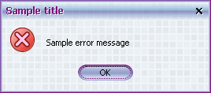
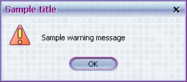
|
|
|
Improved painting of title panes |
Improved visual appearance (drop shadows) for
title panes - both frame / dialog title and icon echo overlay.
The first screenshot below is from the previous version 2.2, the second
screenshot below is from the new version 2.3.
|
|
|
Flyout orientation of combobox popup window |
Configurable flyout orientation of
combobox popup window is controlled by setting the
SubstanceLookAndFeel.COMBO_BOX_POPUP_FLYOUT_ORIENTATION
client property on either the combobox or globally on UIManager. Valid value is one
of the following integers:
- SwingConstants.SOUTH - default value. Popup is shown
under the combobox.
- SwingConstants.NORTH - popup is shown above the combobox.
- SwingConstants.EAST - popup is shown to the right of the combobox
aligned to the combobox top.
- SwingConstants.WEST - popup is shown to the left of the combobox
aligned to the combobox top.
- SwingConstants.CENTER - popup is shown over the combobox
and vertically centered.
The combobox arrow orientation is set accordingly:
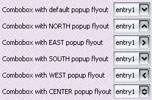
|
|
|
|
|